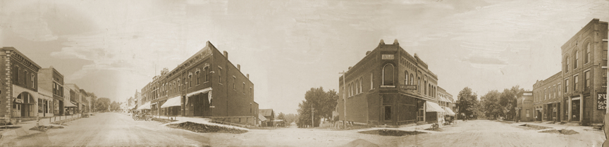

Mount Vernon and The MVHPC

The Mount Vernon Historic Preservation Commission was formed in 1985 by the City Council for the purpose of promoting and protecting the city's architectural heritage.
Historic Districts
The primary responsibility of the Commission is to designate Historic Districts. The procedure for designating a historic district includes: historical research on the buildings and neighborhood; public hearings for property owners; Planning and Zoning Commission review, State Historic Preservation Office (SHPO) review; and City Council approval.
Mt. Vernon currently has three National Historic Districts: the Ash Park Residential, the Commercial, and the Cornell College districts. No Local Historic Districts have been designated.
Educational Activities
In promoting the value of historic preservation in the Mt. Vernon community, the Commission engages in various activities to educate and inform the public.
The Commission has conducted seminars on house painting, porch restoration, Mount Vernon history, preservation of historical artifacts, and numerous other topics of relevance to citizens. Walking tours of historic districts are conducted in the summer and a booklet for self-guided tours has been produced. A design guidelines booklet has also been printed to assist home owners make informed decisions when restoring their homes. The commission conducts a comprehensive day-long seminar covering a broad range of topics each February.
Design Review
Design review is a process to guide property owners in the proper maintenance and enhancement of their structures and neighborhoods through design review guidelines which are promoted and published by the Commission. All property owners in historic districts must apply for one of the following certificates before making any changes in appearance to their property.
A Certificate of No Material Effect is applied for when a property owner, requesting a building permit, demonstrates that there will be no change in the exterior appearance of their building or site which will affect the historic character of the district.
A Certificate of Appropriateness is applied for when a property owner requesting a building permit or demolition permit demonstrates that any alterations are in keeping with the Secretary of the Interior's Standards for Rehabilitation, or that the improvements will not alter or will improve the property's historic appearance.
more on design review
Awards
The Mount Vernon Historic Preservation Commission annually recognizes commercial and residential preservation efforts with its Community Preservation Awards. Restoration and remodeling projects as well as additions are eligible for the awards. The Community History Awards are presented annually to freshmen history students in the Mount Vernon High School who, as part of their class assignment, research a particular aspect of local history.
Meetings
The Mt. Vernon Historic Preservation Commission meets the first Saturday of every month at City Hall. The public is invited to attend.
The Commission can be contacted through the Mount Vernon City Hall at 319-895-8742 or the commission chairman. The current chairman is Ed Sauter. He can be reached at 319-895-8827.
Community Preservation
Individuals interested in preservation in our community are encouraged to contact the Commission.
top
home
{kind=link}